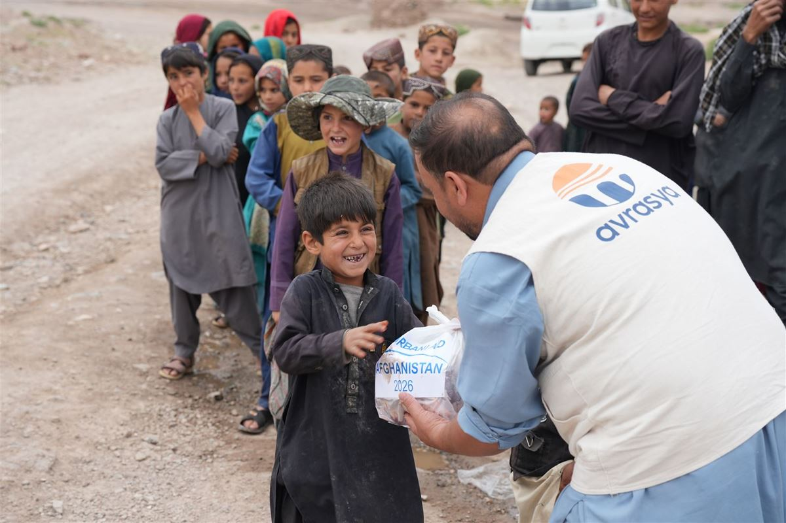
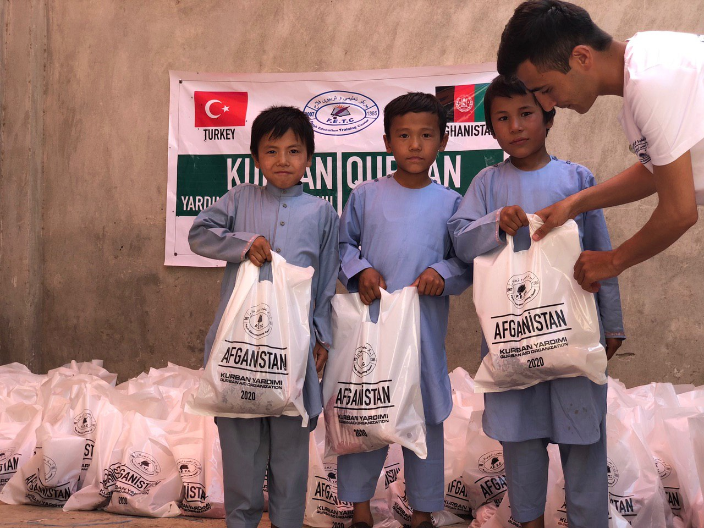
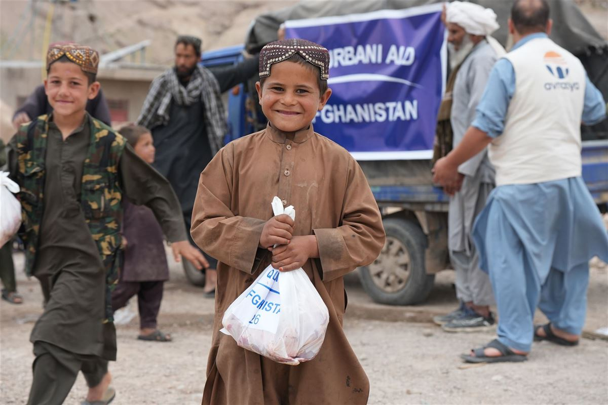
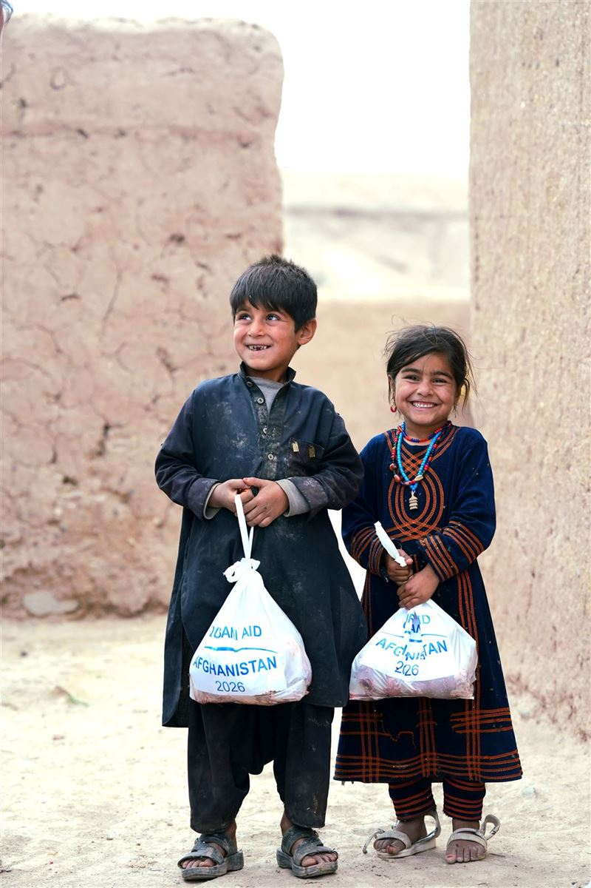
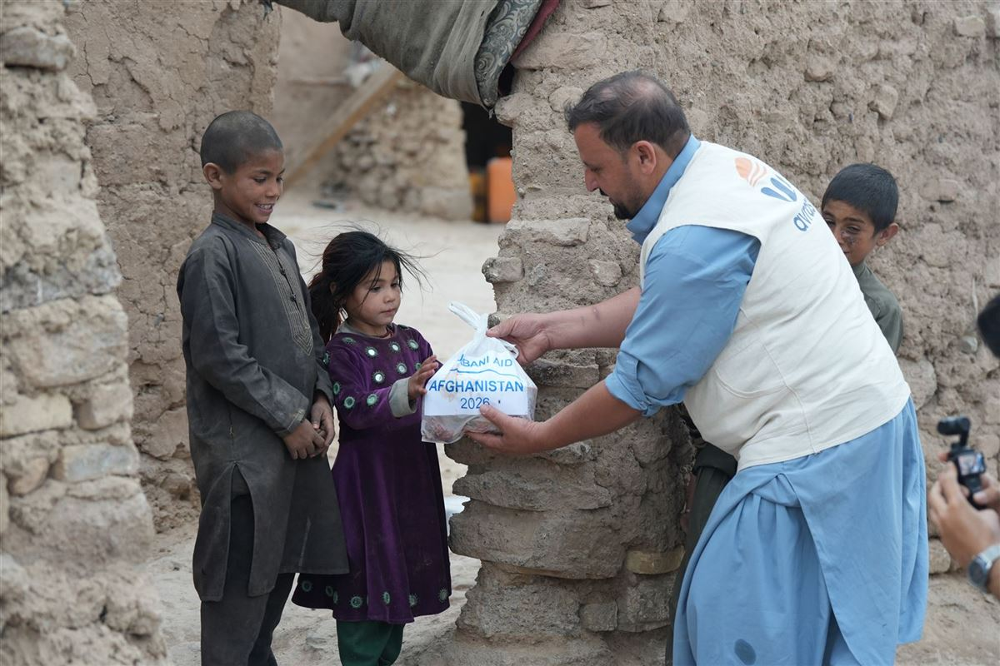
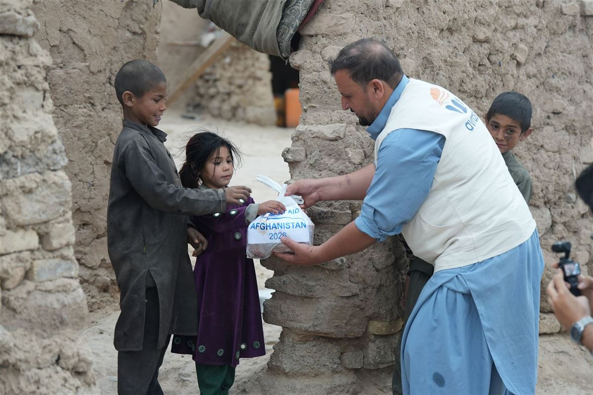
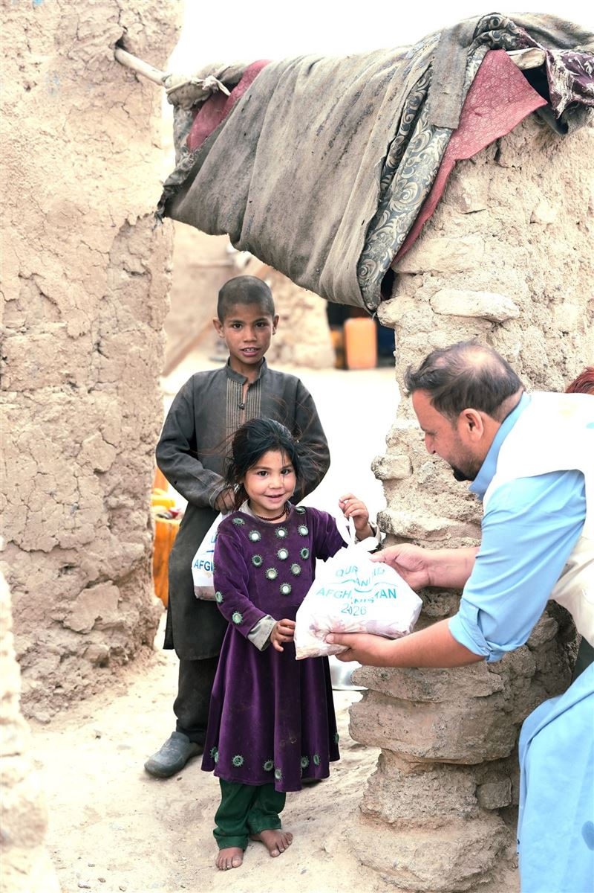
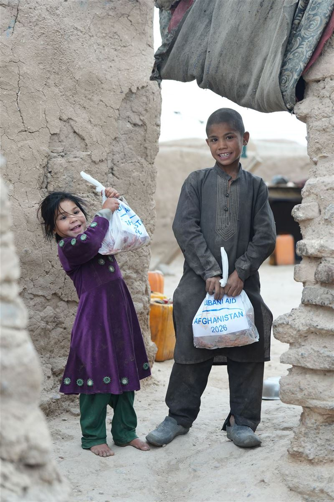
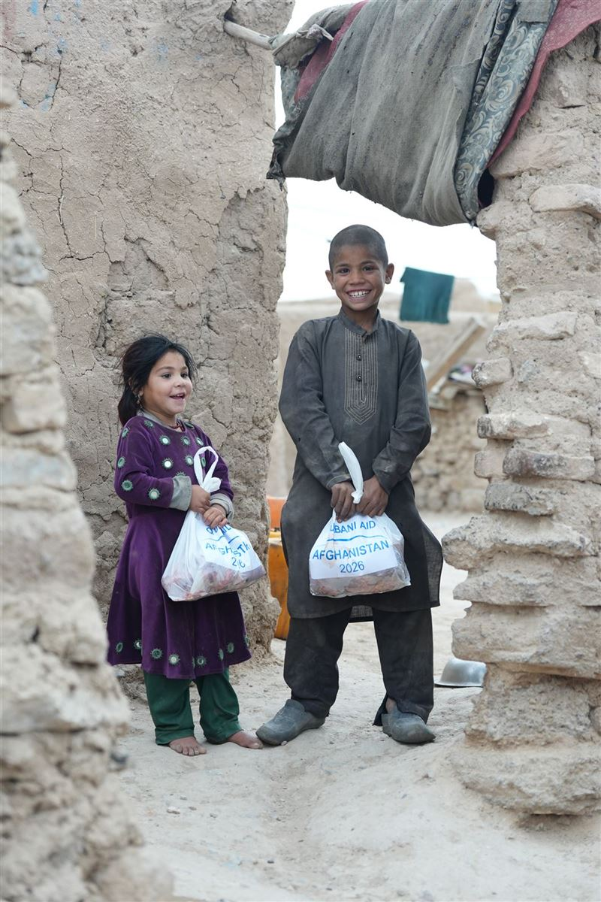
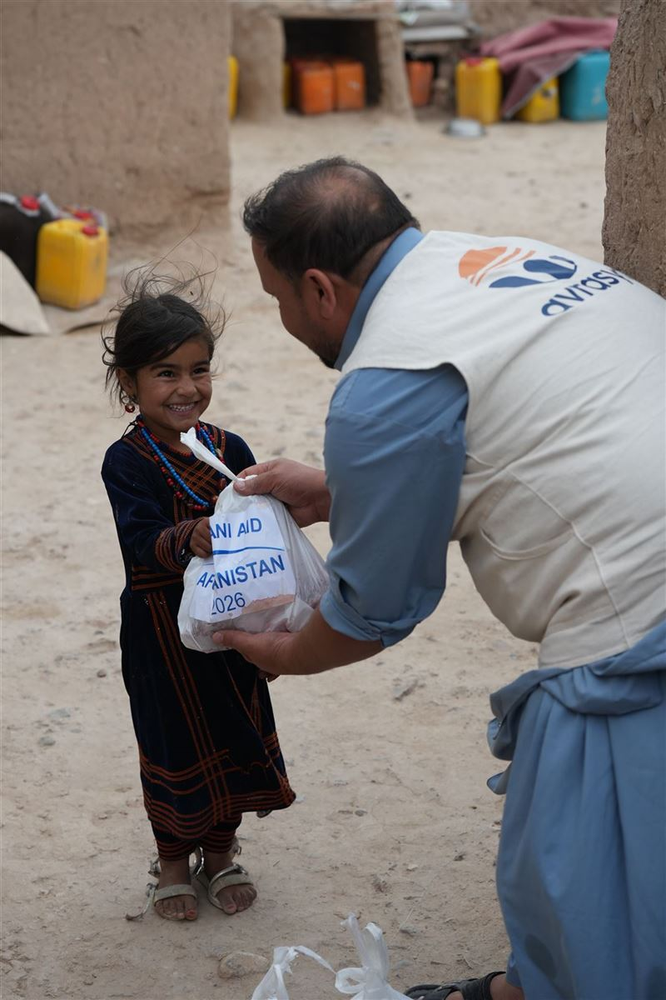

Bağışçılarımızın vekâletleriyle kurbanlarını usulüne uygun olarak kesiyor, etlerini paketleyerek ihtiyaç sahibi ailelere bayram coşkusuyla ulaştırıyoruz.

Kurban Bayramı - 2026, AfganistanKurban Bayramı organizasyonumuz; bağışçılarımızın vekâletlerini kabul etmekten kurban etlerinin ihtiyaç sahiplerine ulaştırılmasına kadar bütün aşamaları planlanmış bir süreç olarak yürütülür. Kesimler, belirlenen mezbahalarda veteriner kontrolünde ve İslami usullere uygun şekilde gerçekleştirilir.
Yetimler, öksüzler, bakıma muhtaç yaşlılar, geliri olmayan dul kadınlar, aşırı dar gelirli aileler, afetten etkilenen bölgelerdeki insanlar.
Veteriner kontrolünde, usulüne uygun kesim ve aynı gün hijyenik paketleme.
Bayramın birinci gününden itibaren taze etlerin kapı kapı teslimi.
Kurban organizasyonumuz, bayramdan aylar önce başlayan titiz bir planlamayla yürütülür. Böylece vekâletlerin tamamı eksiksiz ve şeffaf bir şekilde yerine getirilir.
Bayramdan haftalar önce bağışçılarımızdan kurban vekâletleri sözlü olarak alınır. Kayıt mesaj bildirimleri bağışçılarımıza iletilir.
Kesilecek büyükbaş ve küçükbaş hayvanlar, İslami usüllere uygunluğu kontrol edilerek temin edilir.
Tespit edilen sözleşmeli kesim mahallerine, hisse adetleri netleşince dağıtım yapılır, kesim listeleri ilgili mahaldeki görevlilerimize iletilir.
Vekâletleri teslim ettiğimiz kesim görevlilerimiz, sahada kesimleri usulüne uygun takibini yapar; etler hijyenik ortamda paketlenerek aynı gün dağıtıma hazır hale getirilir.
Paketlenen etler, tespit edilen ailelere bayramın ilk günlerinde kapı kapı teslim edilir.
Kesilen kurban sayısı, dağıtılan paket miktarı ve saha fotoğrafları bağışçılarla paylaşılır.
Kurban Bayramı çalışmalarımızdan kareler:

.JPG)
 kopya.jpg)
.JPG)









.JPG)
Bu sayfa, sahadan yeni fotoğraflar eklendikçe güncellenecektir.
Kurban Bayramı organizasyonumuz hakkında merak edilenler:
Kurban vekâleti; bir kişinin kurbanını kesmek veya kestirmek için bir başkasını vekil tayin etmesidir. Vekil tayin edilen kişi, bağışçının kurbanını kestirmek için vekil tayin edilirse o da başka birini vekil tayin edebilir. Bu şekilde silsile yoluyla kurbanı kesecek kişiye kadar vekâlet ulaştırılır. Kurban vekâleti: "Kurbanınızı kesmeye, kestirmeye ihtiyaç sahiplerine ulaştırmaya beni vekil tayin ettiniz mi?" sorusuna cevap olarak "Vekil tayin ettim." ifadesiyle gerçekleşir. Her bir kurban bağışınız için dernek çalışanlarımız 24 saat içerisinde sizleri arayarak kurban vekâletlerinizin alımını gerçekleştirir.
İslami şartları taşıyan küçükbaş ve büyükbaş hayvanlar arasından seçilen kurbanlıklarınız, ihtiyaç sahibi coğrafyalarda İslami ve hijyenik standartları karşılayan kesim mahallerinde tecrübeli kasaplar tarafından usülüne uygun şekilde, eziyet edilmeden besmele ile kesiliyor.
Paketlenen etler; yetimler, öksüzler, bakıma muhtaç yaşlılar, geliri olmayan dul kadınlar, aşırı dar gelirli aileler, afetten etkilenen bölgelerdeki insanlara bayramın ilk günlerinde teslim edilir.
Evet. Büyükbaş hayvanlarda yedi kişiye kadar hisse usulü kurban bağışı kabul edilmektedir.
Kurban Bayramı'nda kesim mahallerindeki yoğunluğundan dolayı; kesim gerçekleştikten itibaren 1 saat içerisinde iletişim tercihinize göre SMS veya Whatsapp yoluyla kesim bilgi mesajınız tarafınıza iletilir. Faaliyete ait kesim ve dağıtım görsellerini ise websitemizden ve sosyal medya hesaplarımız üzerinden takip edebilirsiniz.